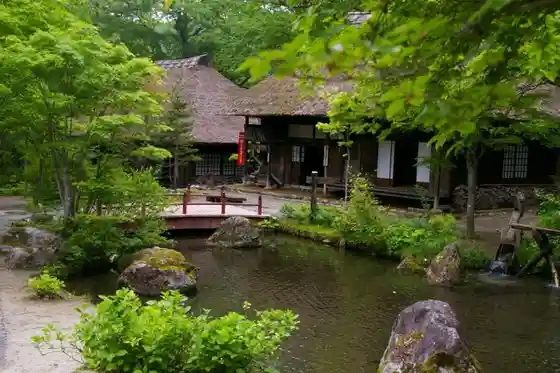
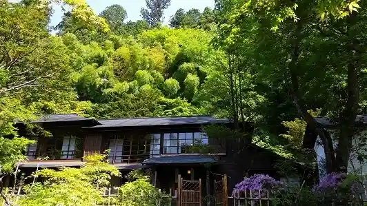
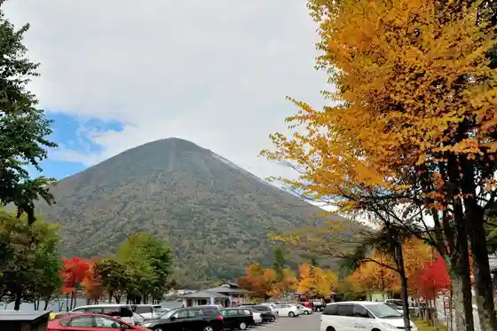
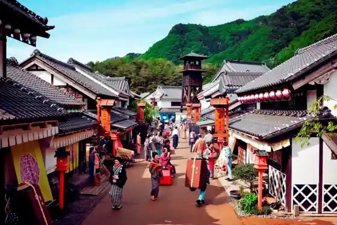

Kinugawa Line Kudari
Nikko, Tochigi · 0288-77-0531 · Official / source link
Heike Village
Nikko, Tochigi · 0288-98-0126 · Official / source link

Kanaya Hotel Rekishikan
Nikko, Tochigi · 0288-50-1873 · Official / source link

Utagahama Daiichi Chushajo
Nikko, Tochigi · 028-623-3206 · Official / source link

Edo Wanda Land Nikko Edo Village
Nikko, Tochigi · 0288-77-1777 · Official / source link

Kido Tate Gandai Tsuribashi
Nikko, Tochigi · 0288-22-1525 · Official / source link
Famiriirojji Hatago Ya Nikko Kinugawa Mise
Nikko, Tochigi · 0288-76-8858 · Official / source link
Sansho Ie
Nikko, Tochigi · 0288-93-2333 · Official / source link
Nodate Iori
Nikko, Tochigi · 0288-27-3040 · Official / source link
Omitsu Bo
Nikko, Tochigi · 0288-25-6560 · Official / source link
Biimusu Japan Nikko
Nikko, Tochigi · 0288-25-5028 · Official / source link
Nikko Yuba
Nikko, Tochigi · 0288-22-1525 · Official / source link
Nikko Onsen
Nikko, Tochigi · 0288-54-3126 · Official / source link
Mt.Berry Oku Nikko
Nikko, Tochigi · 090-7016-6358 · Official / source link
Tobu Warudosukuea
Nikko, Tochigi · 0288-77-1000 · Official / source link
Hana no Yado Matsu Ya
Nikko, Tochigi · 0288-77-1221 · Official / source link
Sambonmatsu Chaya
Nikko, Tochigi · 0288-55-0287 · Official / source link
Taki O Shrine
Nikko, Tochigi · 0288-21-0765 · Official / source link
Oiwake Jizo Mikoto
Nikko, Tochigi · 0288-22-4804 · Official / source link
Kanaya Kashi Honpo
Nikko, Tochigi · 0288-77-1180 · Official / source link
Ryuo Kyo Tsuri Garden
Nikko, Tochigi · 0288-25-6222 · Official / source link
Kinugawa Kawajionsen Tourist Information
Nikko, Tochigi · 0288-22-1525 · Official / source link
Onsen Hoyo Center (Katakuri Baths)
Nikko, Tochigi · 0288-21-8671 · Official / source link
Chuzenjiko
Nikko, Tochigi · 0288-22-1525 · Official / source link
Ogura Yama Tsuri Hori Chaya
Nikko, Tochigi · 0288-53-0122 · Official / source link
Tochigi Prefectural Nikko Nature Museum
Nikko, Tochigi · 0288-55-0880 · Official / source link
Iroha Saka
Nikko, Tochigi · 0288-22-1525 · Official / source link
Reku Center Hitachiya
Nikko, Tochigi · 0288-55-0010 · Official / source link
Nikko Sanchu Zendera Tachigi Kannon
Nikko, Tochigi · 0288-55-0013 · Official / source link
Nikko Yama Onsen Tera
Nikko, Tochigi · 0288-55-0013 · Official / source link
Chuzenjiko Aze Botohausu
Nikko, Tochigi · 0288-55-0880 · Official / source link
Toyotarentaka Nikko Ekimae Mise
Nikko, Tochigi · 0288-50-1800 · Official / source link
Eikoku Taishikan Besso Memorial Park
Nikko, Tochigi · 0288-55-0880 · Official / source link
Itaria Taishikan Besso Memorial Park
Nikko, Tochigi · 0288-55-0880 · Official / source link
JR Eki Rentaka Tobu Nikko Eki Eigyosho
Nikko, Tochigi · 0288-53-0938 · Official / source link
Nikko Yumoto Bijita Center
Nikko, Tochigi · 0288-62-2321 · Official / source link
Chuzenjiko Yuransen
Nikko, Tochigi · 0288-55-0360 · Official / source link
Nipponrentaka Tobu Nikko Ekimae Eigyosho
Nikko, Tochigi · 050-1712-2849 · Official / source link
Nikko Futara Sanshin Shachu Miya Shi
Nikko, Tochigi · 0288-55-0017 · Official / source link
Rekishi Aru (Yu no Mizumi Yukawa no Tsuri)
Nikko, Tochigi · 0288-62-2524 · Official / source link
Tsuri (Oku Nikko)
Nikko, Tochigi · 0288-62-2524 · Official / source link
Sup! Sup!
Nikko, Tochigi · 0288-54-0118 · Official / source link
Kegon Taki
Nikko, Tochigi · 0288-22-1525 · Official / source link
Kegon Taki Erebeta
Nikko, Tochigi · 0288-55-0030 · Official / source link
Akechi Taira Ropuei
Nikko, Tochigi · 0288-55-0331 · Official / source link
Nikko Ta Haha Sawa Goyotei Memorial Park
Nikko, Tochigi · 0288-53-6767 · Official / source link
Sakanato Mori no Kansatsu Sono
Nikko, Tochigi · 0288-55-0160 · Official / source link
Tansuigyo no Kengaku / Esa Yari Experience (Sakanato Mori no Kansatsu Sono)
Nikko, Tochigi · 0288-55-0055 · Official / source link
Sho Momokawa Sakura Park
Nikko, Tochigi · 0288-22-1525 · Official / source link
Omuro Dam Cherry Blossoms
Nikko, Tochigi · 0288-22-1525 · Official / source link
Akama Akama Kaikan Shuhen Cherry Blossoms
Nikko, Tochigi · 0288-22-9636 · Official / source link
Maruyama Park Cherry Blossoms
Nikko, Tochigi · 0288-22-9466 · Official / source link
Kawaji Onsen Kusurishi no Yu Campground
Nikko, Tochigi · 0288-78-0229 · Official / source link
Kinugawa Park Cherry Blossoms
Nikko, Tochigi · 0288-22-1525 · Official / source link